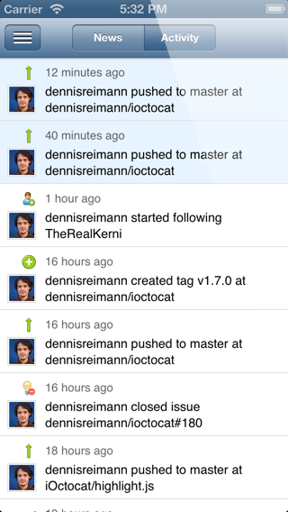
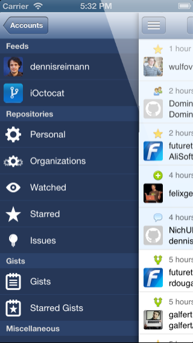
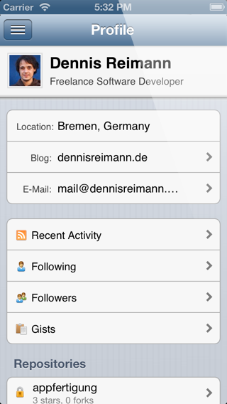
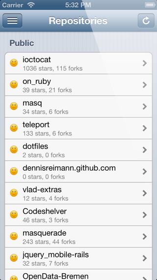
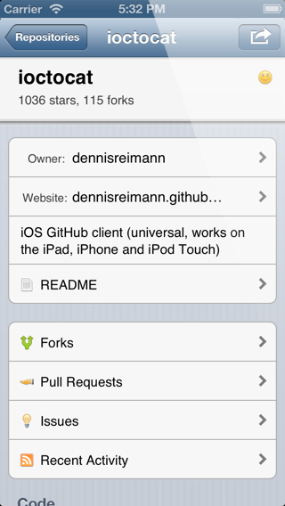
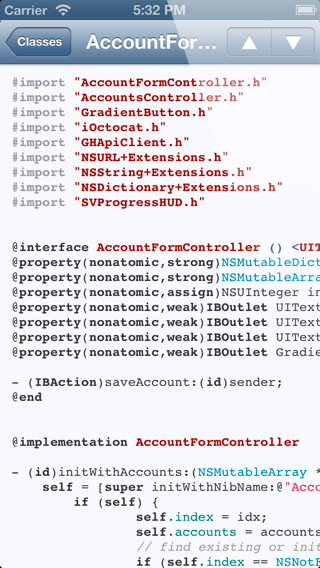
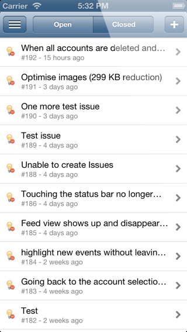
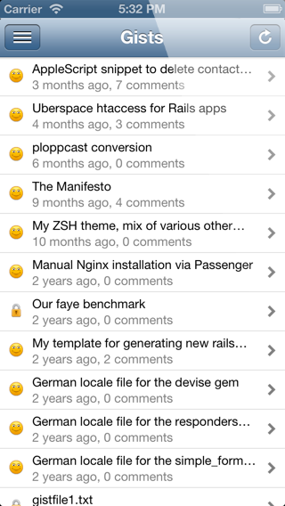
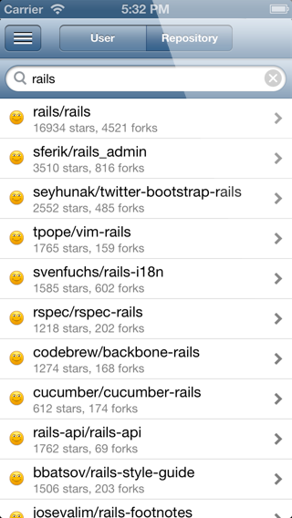

GitHub iOS app
iOctocat is the GitHub app for your iOS device:
It works on the iPhone, iPad, and iPod Touch.
It is open source and
available on the App Store.
iOctocat is the best way for staying up to date with what's happening with your projects and catching up with the open source ecosystem. Be informed about social coding news and don't miss changes to your favorite projects.
iOctocat in action
Click the iPhone to cycle through the screenshots.
- 
- 
- 
- 
- 
- 
- 
- 
- 
Features
iOctocat has a full-blown feature set, including:
- Feeds: Your news and activity feed with the latest events from your repositories, organizations and friends. Find out what's currently happening and take action: Star repositories you like, explore the repos your collegues are starting and the projects your friends are interested in.
- Repositories: iOctocat gives you quick access to your private and public repos plus the ones on your star- and watchlist. See the code and recent commits of the different branches, the README, issues and forks. iOctocat features a code viewer with lots of nice themes, so you can see the code in all of its beauty. And of course you can or watch and star repositories.
- Commits: Detailed information about the files that were added, removed and modified. Browse the changes of the modified files viewing colored diffs. And yes, you can comment on commits.
- Issues and Pull Requests: View the open and closed issues of a repository and use iOctocat to open new issues, edit existing ones or close an issue you fixed. You can also discuss issues and pull requests by writing comments or merge a pull request on the go.
- Users and Organizations: If you see someone interesting who maybe committed to one of your projects, why not have a look at him, checking out his or her repositories, gist and followings. Use iOctocat to immediately follow the person so you will be informed about his contributions to open source software.
- Gists: You have access to your personal (public and private) and starred gists. You can browse them the same way you can explore repositories and of course you can comment on gists, too.
- Search: Look up users and repositories and explore them like mentioned above.
- Multiuser and GitHub Enterprise: Use the app with multiple GitHub account and even your companies GitHub Enterprise installation.
These are the major features, plus lots more. The project itself is open source software too and is rapidly improved with new feature additions as the GitHub API gets extended. So don't miss your opportunity to stay current with the latest events in open source software and check your personal projects on the go.
Buy iOctocat today and be sure to follow the project on Twitter to be informed about what features will be added soon and when new versions ship!